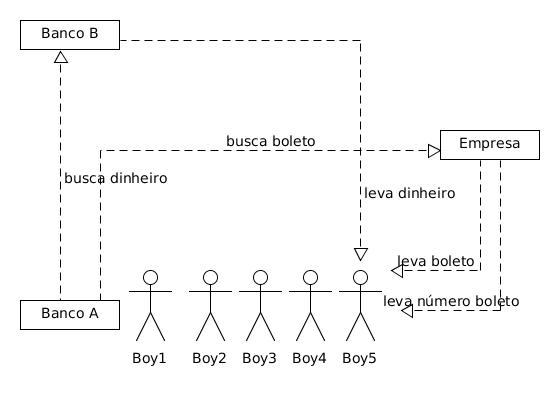

- Adicionar mais threads não traz performance em todos os casos
- Quando o número de threads excede o número de processadores o efeito é inverso
Programação assíncrona com CompletableFuture

Emerson Venâncio @ Dígitro Tecnologia
Filipi da Silva Fuchter @ Dígitro Tecnologia
Programação assíncrona
Por Que?
Programação assíncrona deve ser usada para otimizar o uso de recursos do hardware

Sistema OfficeBoy
public class OfficeBoy {
@PersistenceUnit
EntityManager manager;
public void pagaBoletos(List ids) {
for (Long idBoleto : ids) {
Boleto boleto = manager.getReference(Boleto.class, idBoleto);
Float valor = boleto.getValor();
boolean pago = BancoWSApi.pagaBoleto(boleto, valor);
boleto.setPago(pago);
manager.merge(boleto);
}
}
}

Quando?
- Servlets
- Clientes HTTP
- I/O
- Grande volume de dados
Quando não?
- Quando houver necessidade de lock
- Dentro de transações
Evitando lock
Adicionando e consulmindo sem lock
Evitando lock
Use objetos imutáveis para salvar estado
Completable Future
Representa um objeto Futuro que pode ser explicitamente completado, e que pode ser utilizado para agregar funções dependentes que serão disparadas quando isto ocorrer.
Interfaces implementadas
- Future
- Não notifica quando o resultado está disponível.
- Métodos: get() ou isDone()
- CompletionStage
- Realiza uma ação quando uma outra ação for concretizada.
Métodos
- 38 métodos total
- Características dos métodos:
- somethingAsync(..., Executor)
- somethingAsync(...)
- Utiliza ForkJoinPool
- something(...)
Métodos
- Argumentos e retornos:
- Apply
- Accept
- Run
Métodos
- Forma de execução do método
- single input
- thenApply, thenAccept, thenRun
- binary or
- applyToEither, acceptEither, runAfterEither
- binary and
- thenCombine, thenAcceptBoth, runAfterBoth
- single input
Métodos remanescentes:
- Principais:
- thenCompose
- whenComplete
- exceptionally
- handle
Métodos
- Diferenças:
- thenCompose: retorna outro stage que retornará o resultado
- thenApply: retorna resultado em sí
Comportamento das Threads
- ForkJoinPool
- Executors
Threads demais podem levar a cenários de erro!
Comportamento das Threads
Comportamento das Threads
Comportamento das Threads
Tratamento de Exceção
- whenComplete
- exceptionally
- handle
Exemplo
- Exemplo utilizando os principais métodos:
- TestCompletableFuture
Performance
- Asynchronous API with CompletableFuture
- JavaOne Oracle - Sergey Kuksenko
- Evite transições entre uma Thread para outra. Isto custa!
- Evite excesso de threads!
- Evite bloquear as Threads!
- get()
- join()
Casos de Uso
Workflow para enriquecimento de dados

Workflow para enriquecimento de dados
var templateStep = new QueryBCStep(stepConfig);
templateStep.nextStep(new LinkBCStep(stepConfig))
.nextStep(new TagResultStep(stepConfig, UIsToTag.getTagRequestDTO(nomeUI)));
var stepInicial = new LoadUIDTOStep(stepConfig);
stepInicial.nextStep(new ForkOperacoesStep(stepConfig, request.getOperacoes(), templateStep))
.nextStep(new JoinStep(stepConfig))
.nextStep(new ClassifyResultStep(stepConfig))
.nextStep(new PersistTemporaryStep(stepConfig))
.nextStep(callback);
stepInicial.execute(stepContext, request.getUIID());
Workflow para enriquecimento de dados
Workflow para enriquecimento de dados
Workflow para enriquecimento de dados
Benefícios
- Componentes com escopo bem definido e reutilizáveis (arquitetura)
- Legibilidade do fluxo de negócio (manutenção)
- Melhor aproveitamento dos recursos de hardware (performance)

Riscos
- Falta de experiência do desenvolvedor
- Hábitos de programação síncrona
- Callback-hell
- Estados inesperados por modificação concorrente
- Deadlocks

Emerson Venâncio @ Dígitro Tecnologia
Filipi da Silva Fuchter @ Dígitro Tecnologia